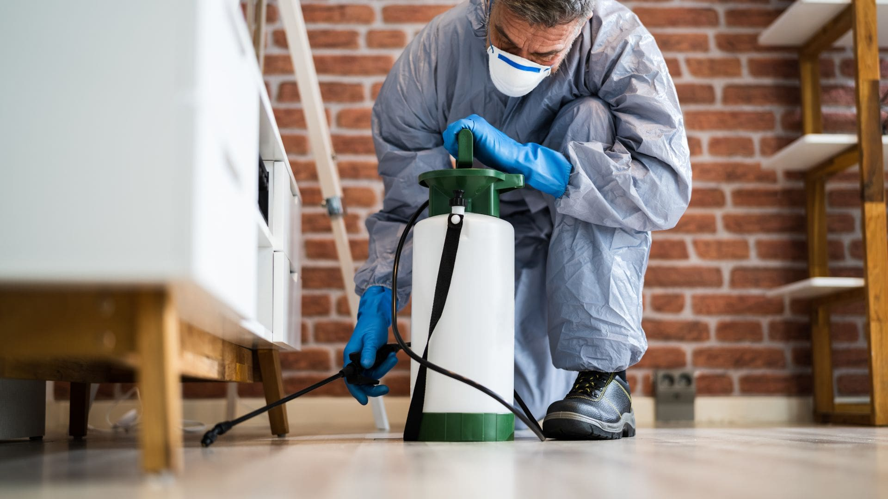
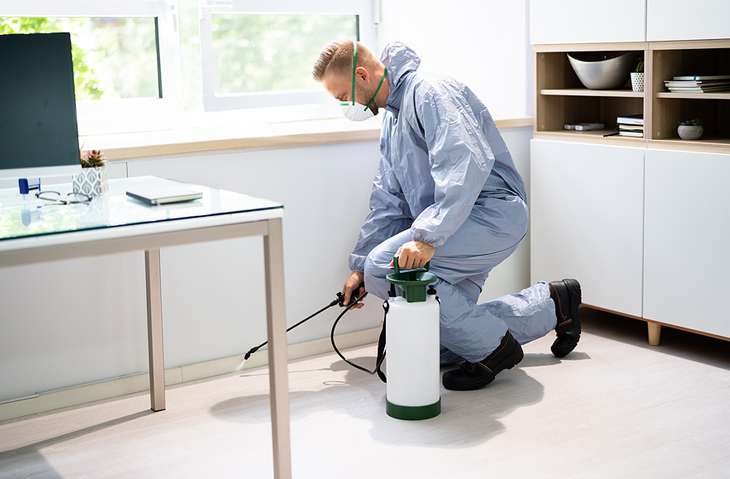
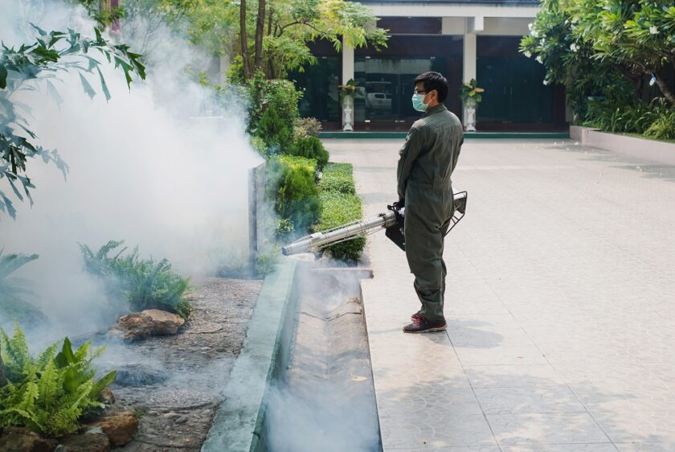

Dezinfeksiya, Dezinseksiya, Deratizasiya xidmətləri - PROF DEZ IPM MMC
“Prof-Dez” IPM MMC şirkəti artıq 2009-cu ildən İctimai Sağlamlığın qorunması sahəsində öz peşəkar xidmətlərini təklif edir. Bu istiqamətdə Azərbaycan Respublikasının Səhiyyə Nazirliyinin ISN/L-275 saylı lisenziyasına əsasən, respublika ərazisində profilaktik və cari dezinfeksiya, dezinseksiya, deratizasiya, həmçinin ilanlar və digər sürünənlərə qarşı kimyəvi və mexaniki üsullarla işlər aparır. Dezinseksiya - Həşərat populyasiyalarına kimyəvi və mexaniki üsullarla nəzarət Deratizasiya - Gəmirici populyasiyalarına kimyəvi və mexaniki üsullarla nəzarət Dezinfeksiya - Patogen mikroorqanizmlərə nəzarət “Prof-Dez ”IPM MMC şirkətinin peşəkar səviyyədə dayanıqlığı üçün tələb olunan üstün cəhətləri: Böyük iş təcrübəsinə yiyələnmiş ixtisaslaşmış həkim, bioloq-entomoloq və dezinfektorlardan ibarət geniş işçi strukturu: Bu, öz növbəsində böyük həcmli və çoxşaxəli işlərin operativ aparılmasında mühüm rol oynayır. Keyfiyyət və zəmanətə əsaslanaraq, özəl və dövlət strukturları ilə müqavilələr bağlayaraq böyük iş təcrübəsi Böyük maliyyə dövriyyəsinə malik olması və bunun isə öz növbəsində maddi və texniki bazanın lazımi səviyyədə təşkil olunmasında rolu. (Avropa və ABŞ-ın qabaqcıl şirkətlərinin istehsal etdiyi kimyəvi preparatlardan və avadanlıqlardan istifadə olunaraq daim yüksək keyfiyyət əldə edilir).
Xidmətlərimiz
Dezinfeksiya
Dezinseksiya
Deratizasiya


sdvsdvdsvsdv